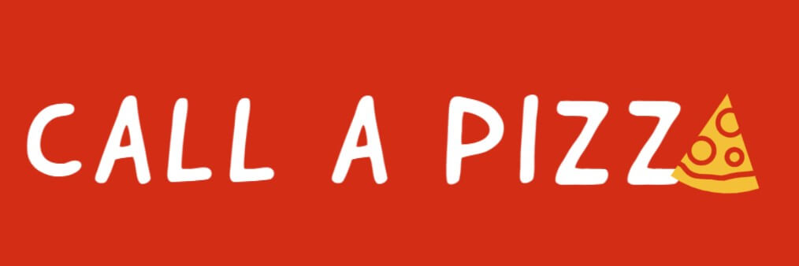
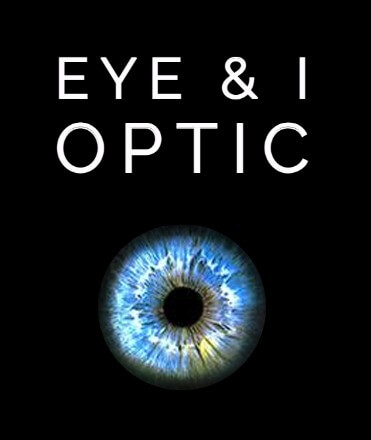
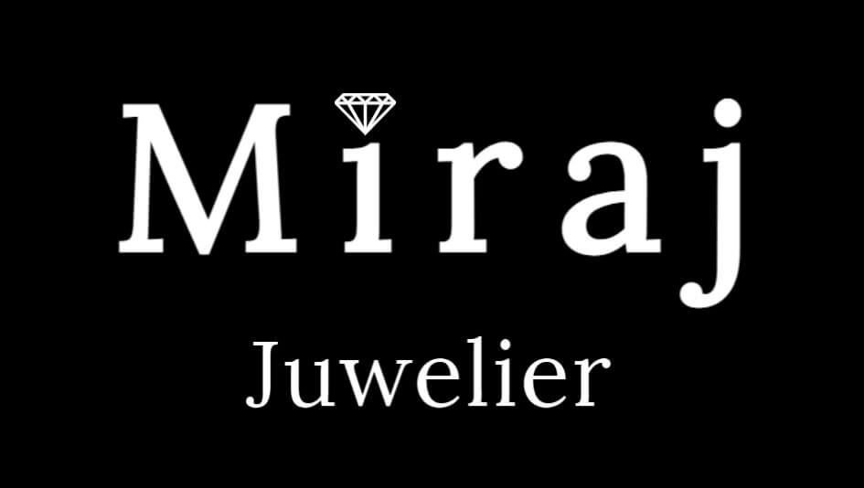

Logo design
At designe mit eget logo og redesigne eksisterende logoer er projekter jeg også har beskæftiget mig med. De fleste af projekterne er udført i forbindelse med min undervisning, hvoraf mit eget logo er noget jeg har arbejdet med i fritiden, for at styrke mine evner indenfor grafisk design og skabelse af en identitet gennem et logo. Jeg har benyttet mig af programmerne Adobe Illustrator og Adobe Spark til disse projekter, og derved ligger mine erfaringer inde for disse. Nogle af de projekter med de redesignede logoer, samt mit eget logo kan ses nedenfor.


